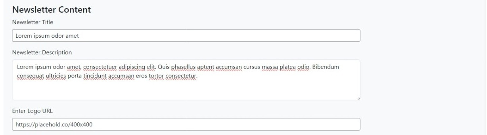

Beehiiv Newsletters WordPress Plugin Documentation
Overview
The Beehiiv Newsletters WordPress Plugin allows you to display newsletters from Beehiiv on your WordPress website. This documentation provides a guide on installing, configuring, and using the plugin effectively.
Features
- ✅ Connect multiple Beehiiv API keys
- ✅ Display newsletters from selected publications
- ✅ Customize newsletter display settings
- ✅ Show the social media icons and links
- ✅ Edit or disconnect API connections anytime
Plugin Pages
Add New Key
To connect a new Beehiiv API key, follow these steps:
- Create a new WordPress page to display newsletters.
- Navigate to Beehiiv > Add New Key in the WordPress admin menu.
- Enter your API Key and click Verify.
- Once verified, all available publications under this API will be listed.
- Select the desired publications to display newsletters from.
- Choose the created WordPress page where the newsletters should be displayed.
- Enter the Publication Title and a brief description.
- Upload a Publication Logo to the WordPress media library and enter its URL.
- Optional: Enable Social Widget to display social media icons.
- Select the social media icon text color.
- Select the social media icon background color.
- Enter URLs for Facebook, Instagram, Twitter, YouTube, LinkedIn, and RSS Feed.
- Optional: Customize newsletter card layout:
- Enable Show Published Date to display post dates.
- Enable Show Sub Title to display subtitles.
- Select the number of newsletter cards per row for desktop view.
-
Click Publish to save the settings.
- Click View Dashboard to see the list of connected APIs.
Dashboard
The Dashboard page provides an overview of all Beehiiv API connections. It displays a table with the following columns:
- S. No – Serial number
- Publication Name – Name of the connected publication
- Publication ID – Unique ID of the publication
- API Key – The connected Beehiiv API key
- Page Slug – The associated WordPress page where newsletters are displayed
- Actions – Edit or Disconnect the connection
Editing an API Connection
- Go to the Dashboard.
- Click Edit next to the desired API connection.
- Modify any required fields.
- Click Save Changes to update.
Disconnecting an API Connection
- Go to the Dashboard.
- Click Disconnect next to the desired API.
- Confirm the removal to disconnect it from your site.
Custom CSS
You can customize the appearance of the Beehiiv Newsletters display using custom CSS. Below are some common styles you can modify:
Styling the Newsletter Cards
.beehiiv-newsletter-card {
border: 1px solid #ddd;
border-radius: 10px;
padding: 15px;
margin-bottom: 20px;
background-color: #fff;
box-shadow: 0 2px 5px rgba(0, 0, 0, 0.1);
}
Customizing the Publication Title
.beehiiv-publication-title {
font-size: 24px;
font-weight: bold;
color: #333;
}
Styling Social Media Icons
.beehiiv-social-icons a {
display: inline-block;
margin: 5px;
padding: 10px;
border-radius: 50%;
background-color: #0073aa;
color: white;
text-decoration: none;
}
.beehiiv-social-icons a:hover {
background-color: #005a87;
}
Modifying the Newsletter Grid Layout
.beehiiv-newsletter-container {
display: grid;
grid-template-columns: repeat(auto-fit, minmax(300px, 1fr));
gap: 20px;
}
To apply these styles, add them to your WordPress theme's style.css file or use the WordPress Customizer under Additional CSS.
Notes
- Ensure that your Beehiiv API key is valid before proceeding.
- Always assign a dedicated WordPress page for displaying newsletters.
- If social widgets are enabled, ensure that the URLs provided are correct.
- Adjust the layout settings for the best display experience on different devices.
This documentation should help you effectively use the Beehiiv Newsletters WordPress Plugin. For support or further assistance, write mail to web@internest.agency.